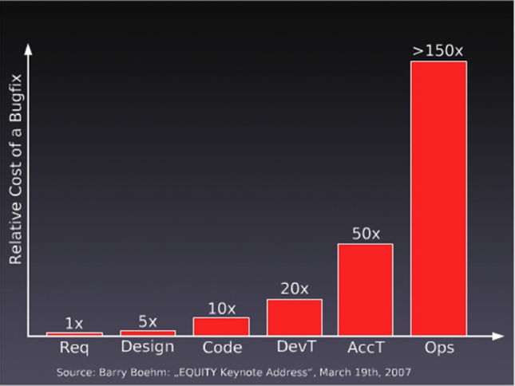
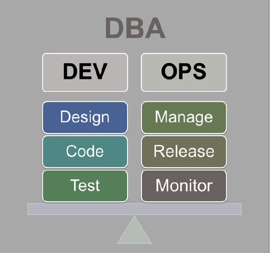
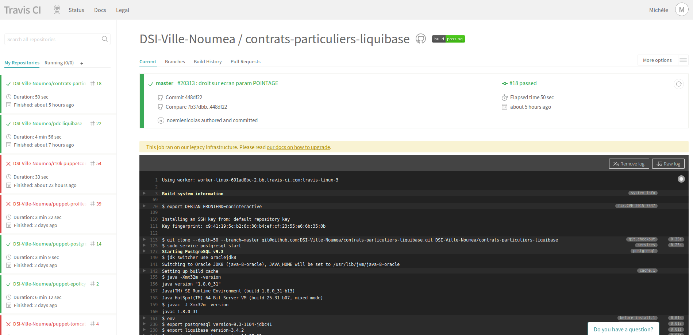
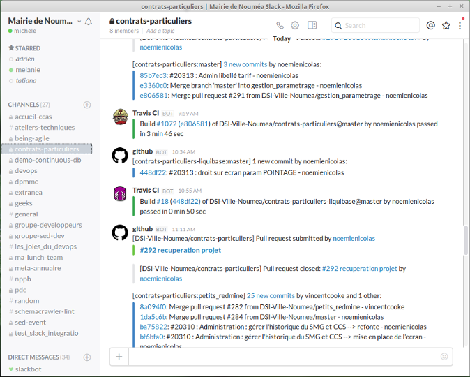

Database without dba
An Agile/DevOps Database approach for (very) little teams.
DevOps
Goals
- Increase Application uptime
- Reduce overall IT spent on Infrastructure
- Increase release velocities : faster and more often
What is DevOps
in a few words
- Collab between IT professionals
- Culture of (operational) continuous improvement : facts rather than philosophy
- Not a prescribed set of practices, but rather high depending on teams, technologies and processes which make up organization
Communication
The core
- Educate each other
- Understand what matters most to their counterparts
- Dev understanding how underlying systems are configured/working : knowledge of impact of changes between dev and prod
Communication
- Empathy between the different IT stakeholders
- As empathy grows in the IT Org. teams begin naturally come together to collaborate
- Egocentric vs. holistic view of the system and collaboration to optimize the value stream
Shifting Left
- Bringing production concerns further left in the develop/test/deploy cycle
- Making note of specific concerns that will need to be addressed for the push to production
- Working on issues before they become issues
- Reduce time and resource spent in troubleshooting
Cost of a Bugfix
Not automating every process, but rather only those tasks that are manual, rote, tedious aspects of the job and consume a great deal of your time.
Free up time for IT pros. to think about more strategic issues, and spend more time collaborating with other groups to driver additional value through innovation in their products and services.
Benefits
- Environments more in sync
- More testing environments (and easier to reproduce/fix bugs), see previous slide
- Accelerates delivery of applications
- Increased uptime
- More frequent release of innovative features
DBA and and DevOps
Great, but ... what can we do NOW to save resources and focus on the real deal ?

Human values
- Have empathy for people working with you
- Respect and rely on people expertises, and valorize them
- Never stop to improve yourself as well as the system
shintoism
The followers of Shintoism believe that spiritual powers exist in the natural world. They believe that "spirits" called kami live in natural places such as in animals, plants, stones, mountains, rivers, people and even the dead.
IT shintoism
Loving softwares and your system
- Have empathy for systems, code and software : consider them as living things
- Create a place where they will be living together comfortable
- Respect them, use them where they are good at.

Now, let's deal with real life.
The sentences that triggered everything
We are not comfortable with database schema upgrades.
We don't have time to read the sqls you provide : we do pass them as provided without checking potential design issues and we don't necessary have the required knowledge.
Still remembering that day...

...and finding opportunities.

Agility, flexibiliy
- Transform weakness to opportunities
- Automate
- Version/tag anything
- Manage database like any other system component
- Manage databases as (and by) code
- Push code to databases without having to give human access to them
Motivations
- No production DBA
- Architect/developer who was previously Oracle/PgSql production DBA
- Sysadmins focused on automation
- Focus on automation for all
- Motivation to deploy faster/more with no specific database knowledge
- Wish to version everything
- No resource/time to test database design quality in the production team but focus on these aspects on the dev side
- All Linux users and commited in open source development and tools
Team
Dev and Ops
- David Majorel/opt.nc (sysadmin/architect/ansible)
- Adrien Sales/Noumea City (architect/dev/dba knowledge)
- Michele Barre/Noumea City (java/j2ee developer)
- Melanie Gault/Noumea City (sysadmin/architect/puppet)
- Sualeh Fatehi/Schemacrawler (schemacrawler lead developer)
- Developers involved in continuous improvement
Roadmap
Achieved today
- Deploy & upgrade databases schemas easier
- Document database schema in an automated way
- Keep in mind that we could one day have a dba and hence provide him the tools to review the sql dev team send in input
- Check and report database design issues
Tools
- Liquibase : "source control for your database"
- Schemacrawler : "schema discovery and comprehension tool"
Tools
Liquibase

Key concepts
- Changes are described in a simple, readable format
- Everything you need to know about the why of a database change is tied to the change itself
- It is easy and possible for DBAs to review changes before deployment
Security
- We don't want apps (war) to upgrade database themselves
- Apps are connected to db with dedicated accounts that can only execute DML : datasource cannot add column/drop table
- Table privileges are fine grained
- Apps connect to db through a dedicated user : privileges are granted to him, table names are resolved by synonyms/search_path
- DDL queries are only run by liquibase commands (adm_users)
- adm_users are not granted to connect from app servers (tomcat), only from the server that run changes
Upgrading databases
From ...
- Get the sql
- Get, install (and maintain) the open the dedicated db client
- Connect to the right db on the right env
- Check that you don't have already played this sql
- Run the sql
- Check that all required sql have all been passed, and in the right order
... and some nice questions
- Did i really already run this sql ?
- What are the pending sql on this schema ?
- I'm not sure if everything is fine : can i re-run the sql ?... to be sure ?
- Something's wrong on the prod db vs dev one : are you sure you ran the same sqls on both ? If not, what is the delta ?
to.
Puppetized Liquibase install
class profiles::liquibase {
$version = hiera('liquibase::version')
class { 'liquibase':
version => $version,
}
}
to.
Schema upgrade
export TARGET_VERSION=1.04.00
cd liquibase
# Switch to tag
git checkout tags/${TARGET_VERSION}
# report pending upgrades (dba not done, but review possible)
liquibase dbDoc ./dbDoc
# perform upgrade
liquibase update
Key concepts
- the "changelog"
- the "changeset"
- databasechangelog : id, author, dateexecuted, orderexecuted, md5sum, description, comments, ...
The hash*@%! ? WHAT ?
"I can't apply my databasechangelog : liquibase is complaining that the code that has already been deployed on my db ?!!"
Yep buddy, that's normal and it's pretty cool, just add a new changeset to patch your previous one and other people will be happy ;-p

databasechangelog overview
id | author | dateexecuted | orderexecuted | md5sum | description | liquibase
-----------------------------------------+---------------------+----------------------------+---------------+------------------------------------+-----------------------------------------------------+-----------
1417670162732-1 | salad74 | 2015-07-21 10:24:54.721108 | 1 | 7:1d454f92543dfc2f97501ba16669c6d7 | createSequence | 3.3.2
1417670162732-2 | salad74 | 2015-07-21 10:24:54.739246 | 2 | 7:820672cebd4d2c7adf8de021c9304788 | createSequence | 3.3.2
1417670162732-3 | salad74 | 2015-07-21 10:24:54.752848 | 3 | 7:28470b521a8be561e0cbde2053257007 | createSequence | 3.3.2
1417670162732-4 | salad74 | 2015-07-21 10:24:54.764076 | 4 | 7:c86dbe6244a166da8335b66c17a1a16a | createSequence | 3.3.2
Liquibase
Used features
- Code branching and merging
- Multiple developers (on git)
- Multiple database types
- Supports context-dependent logic : partially
- Generate Database change documentation
- Generate Database "diffs" : check if ERP changes db schema
- Automatically generate SQL scripts for DBA code review
- Open Source: Apache 2.0 License : code donation, public roadmap
- Java APIs for executing and embedding
- Generate database Changelog
- Extensions : db2i for AS400->PgSql Migrations
Liquibase
Not (yet) used features
- Tags
- Contexts
- Rollback
Real life scenarios
- Standard db schema upgrades
- Database schema creation (liquibase for dbas)
- Parameter tables feeding
- Database migration (Oracle to PostgreSql) and data patching : final live migration (with datas) operated within less than 3 minutes !
- Database migration (DB2/400 to PostgreSql)
The "liquibase dilemma"
Should i recreate a non "liquified" database to get the whole db changelog or should i construct liquibase on legacy created tables ?
Liquibase Code donations
- deb and rpm installers, merged in base source code, now part of official release
- Puppet module (soon released to open source)
- Some bug fixes (with related unit tests)
Links and resources
- Production automation
- The DBA's Role in Devops by Datical (Enterprise Liquibase Edition and much more)
Tools
Schemacrawler

Now you have a database ...
How to better understand it, check and test its design quality ...
- Better understand database design/relations
- Draw database diagrams
- Lints : check/detect/test and report design quality
Side goals
- Giving a developer open source development experience
- Getting control on our tools
- Opportunities to learn by practice (git, continuous build, SaaS services, collaboration) on up-to-date technologies
- Taking part in open source community
- Contributing to production automation
- Having fun and develop cool tools
- Code coverage challenging
- Prototyping POCs
Schemacrawler (Code) donations
- deb and rpm installers
- fully crossplatform installer, Izpack based
- Some bug reports
- Additional lints
- First usage in continuous integration on Travis
Now you have a database ...
How to better understand it, check and test its design quality ...
- Better understand database design/relations
- Draw database diagrams
- Lints : check/detect/test and report design quality
Side goals
- Giving a developer open source development experience
- Getting control on our tools
- Opportunities to learn by practice (git, continuous build, SaaS services, collaboration) on up-to-date technologies
- Taking part in open source community
- Contributing to production automation
- Having fun and develop cool tools
- Code coverage challenging
- Prototyping POCs
Schemacrawler (Code) donations/collaborations
- deb and rpm installers
- fully crossplatform installer, Izpack based
- Some bug reports
- Additional lints
- First usage in continuous integration on Travis
Schemacrawler lints
- Evaluating the quality and consistency of a database schema
- Set of native lints
- Helpfull but do not fit all our needs
- Contribute to the Schemacrawler project, and propose our own lints based on personnal experience and best practices
Schemacrawler lints
Step by step...
- Simple lint development
- Continuous build (Travis)
- Test coverage (Coveralls)
- Dependencies update (VersionEye)
- Check source code with SonarQ
Schemacrawler lints
Collaborating
- Often in contact with Sualeh thanks gitter, mail, issue tracker
- Some of our lints have been integrated in the native lints
- Bug reports
- Beta test
- New asked feature : continuous integration
Schemacrawler and continous integration
The final ticket that made it possible
sualeh/SchemaCrawler#39We are using continuous quality check and integration on an always increasing number of projects, but this essentially applies to code (Java code). This is done by Travis.
Schemacrawler and continous integration
What i begin to think about and would save a lot of time to me is : to run lint on commit event on gh, on Travis and call lint execution that would return an error status code when two many high are triggered, or based on certain lint filtering conditions.
Schemacrawler lints
Continuous integration
- Need : automatic checking
- Liquibase scripts are run and database is checked at each commit on github
- Commit is rejected if the updates don't fit our quality requirements : one PK per table, no blob...
- Special cases are debated with the team, and exceptions are added if required
Schemacrawler lints
Continuous integration - Travis
sudo: required
language: java
cache:
directories:
- .autoconf
- $HOME/.m2
jdk:
- oraclejdk8
services: postgresql
addons:
postgresql: 9.3
before_install:
- env
- export postgresql_version=9.3-1104-jdbc41
- export liquibase_version=3.4.2
- export schemacrawler_version=14.07.02
- export schemacrawler_lint_version=1.1.3
- echo "downloading and installing liquibase ${liquibase_version}"
- wget https://github.com/liquibase/liquibase/releases/download/liquibase-parent-${liquibase_version}/liquibase-debian_${liquibase_version}_all.deb
- sudo dpkg -i liquibase-debian_${liquibase_version}_all.deb
- echo "downloading and installing postgres ${postgresql_version} driver."
- wget http://central.maven.org/maven2/org/postgresql/postgresql/${postgresql_version}/postgresql-${postgresql_version}.jar
- sudo cp postgresql-${postgresql_version}.jar /usr/lib/liquibase-${liquibase_version}/lib/
- echo "downloading and installing SchemaCrawler"
- wget https://github.com/adriens/schemacrawler-deb/releases/download/${schemacrawler_version}/schemacrawler-deb_${schemacrawler_version}_all.deb
- sudo dpkg -i schemacrawler-deb_${schemacrawler_version}_all.deb
- wget https://github.com/mbarre/schemacrawler-additionnallints/releases/download/${schemacrawler_lint_version}/schemacrawler-additionnallints-${schemacrawler_lint_version}.jar
- sudo cp schemacrawler-additionnallints-${schemacrawler_lint_version}.jar /opt/schemacrawler-${schemacrawler_version}/lib
- sudo chmod +rx /opt/schemacrawler-${schemacrawler_version}/lib/schemacrawler-additionnallints-${schemacrawler_lint_version}.jar
- echo "deploying pdc database."
- dropdb --if-exists contratspart
- psql -c 'create database contratspart;' -U postgres
- cd cp
- liquibase --driver=org.postgresql.Driver --username=postgres --url=jdbc:postgresql:contratspart --defaultSchemaName=public --changeLogFile=db.changelog.xml update
- cd ..
install:
- mvn exec:exec
notifications:
slack: dsi-mairie-noumea:IhlQJjnXibAztaC5FAmP4Bej
Schemacrawler lints
Continuous integration - Travis
Schemacrawler lints
Continuous integration - Slack notifications
Schemacrawler lints
Next steps
- Online reports
- Specific badge that shows up the database quality level (see coverity)
Tools used to produce this slideshow (collaborative mode)
How this slideshow has been developped
- Reveal.js
- Github
- Any text editor : Kate, Atom, vim
- git client
- Web browser